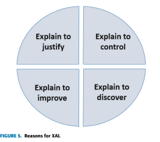
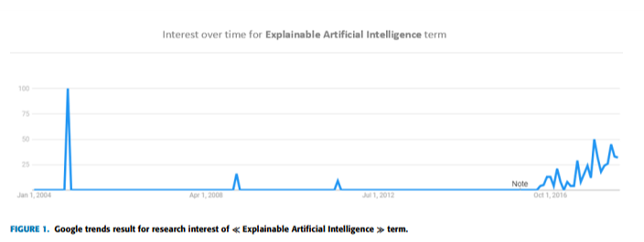
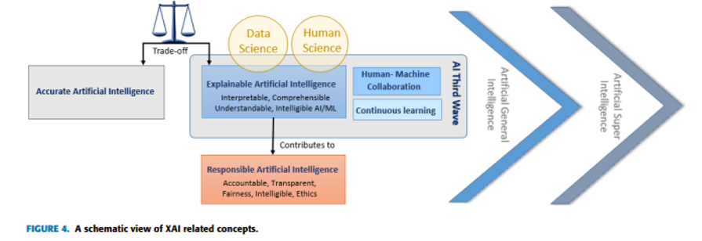
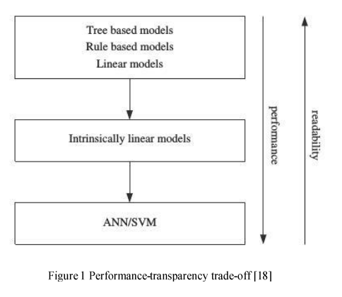
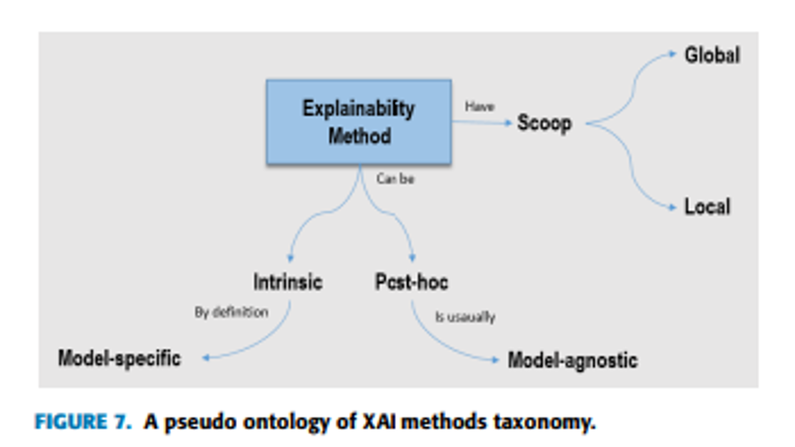
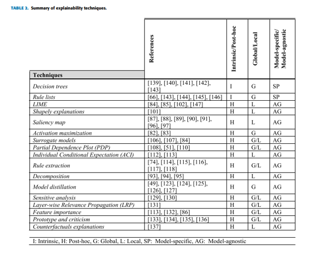

<!doctype html>
<html lang="en">

<head>
	<meta charset="utf-8">

	<title>reveal.js - Markdown Example</title>

	<link rel="stylesheet" href="./dist/reveal.css">
	<link rel="stylesheet" href="./dist/theme/black.css" id="theme">

	<link rel="stylesheet" href="./plugin/highlight/monokai.css">
</head>

<body>

	<div class="reveal">

		<div class="slides">

			<!-- Slides are separated by three dashes (the default) -->
			<section data-markdown data-separator="^\n----\n$" data-separator-vertical="^\n--\n$">
				<script type="text/template">
					## Class 9: Explainability
					---
					

					----

					## References
					---

					* XAI is a new field - best to learn from the literature
					* Course reference texts do not go into great detail on XAI
					* Main reference for this presentation: Peeking Inside the Black-Box: A Survey on Explainable AI (Adadi and Berrada, 2018)
					* Additional references will be distributed for further reading

					----

					## XAI Motivations
					---

					

					----

					## XAI Trend / Timeline
					---

					

					----

					## Related Concepts
					---

					

					----

					## Performance vs. Explainability
					---

					
					* Dosilovic et al.

					----

					## High Level Taxonomy
					---

					

					----

					## More Detailed Taxonomy
					---

					

					----

					## "Peeking Inside the Black-Box" (Adadi summary)
					---
					* FAT (Fairness, Accountability, Transparency) academics
					* FAT connected to AI, computer science, legal, social policy, considerations etc.
					* Significant DoD investment (DARPA XAI program, 2017-2021)
					* Term "XAI" coined by Van Lent in 2004

					----

					## Definitions
					---
					* No standard definition
					* More of a movement than a standard
					* Some authors (Russel and Norvig) distinguish between "explainable" and "interpretable", others use terms interchangeably

					----

					## Explainable vs. Interpretable (common)
					---
					* Explainable = Ensure any key decisions and any data driving those can be explained to users and stakeholders
					* Interpretable = a model is explainable but also can study and understand (Adadi), and predict how changes propagate (Russel and Norvig)
					* Responsible = adhering to social values, moral, and ethical considerations

					----

					## Examples
					---

					* Transportation: Uber (2017)
					* Healthcare: ANNs for pneumonia patient routing (1990s)
					* Legal: Loomis vs. Wisconsin, trade secret assessment of probability to re-offend (2016)
					* Finance: credit scoring
					* Military: DARPA XAI

					----

					## Technical Challenges
					---

					* Success of neural nets imply problems of interest are complex, layered, and nonlinear
					* (If computer vision was easy it would have been solved before neural nets!)
					* Hall and Gill: *"multiplicity of good models"* = there is more than one model that meets the need
					* Explainability vs. accuracy tradeoff

					----

					## Enablers
					---

					* Data science and more data - more data aids explanations
					* Fundamental advances in AI - new models and explainability techniques
					* Human sciences - understanding how humans make decisions (Norvig: human decisions aren't always explainable)

					----

					## Types of XAI
					---
					* Complexity based - use a simple model
					* Perturbation based - tweak / perturb the inputs
						- Global - understand whole model
						- Local - understand one decision
					* Model methods - inspect the model itself
						- Model specific - limits the model choice
						- Model agnostic - compatible with (almost) any model

					----

					## Complexity Based
					---
					* Use simple models
					* Intrinsic explainability and strict interpretability
					* Decision trees, linear regression
					* Often not as accurate

					----

					## Perturbation Methods
					---
					* Tweak the inputs to reveal information about the model (global) or the decision (local)
					* LIME, SHAP, Integrated Gradients are all local perturbation methods

					----

					## Model Methods
					---
					* Model specific methods of inspecting models: e.g., visualizing a decision tree
					* Model agnostic methods of inspecting models: e.g., visualizing representations / latent features
						- Train surrogate model and visualize surrogate model
						- Why a surrogate? Avoid limitations of the explainable model while still obtaining explainability benefits

					--

					* Model agnostic continued:
						- Rule extraction - extract rules to approximate decision making processes
						- Decomposition - extract rules from blocks of an ANN
						- Pedagogical - use an un-explainable network to train an explainable network
						- Hybrid / eclectic - combination of decomposition and pedagogical

					--

					* Model agnostic continued:
						- Model compression to transfer information (dark knowledge) from deep networks (teacher) to shallow networks (student)
						- Sensitivity analysis - measure invariance to a perturbation
						- Relevance propagation - start with a result and back-propagate uncertainty
						- Feature importance - e.g., random forest Gini importance (will see counter-example later)

					--

					* Model agnostic continued:
						- Example-based methods
							- Prototypes and criticisms: select examples most representative (prototypes) and instances not well represented by these (criticisms)
							- Counter-factuals: describe minimum conditions that would have led to an alternate decision

					----

					## Draw it out!

					----

					## Another Author's View
					---
					* Reference: Explainable AI: A Survey (Dosilovic et al.)
					* Short conference paper
					* Shows how the community views XAI trends and issues

					----

					## Key Issues
					---
					* EU: right to explain
					* Trust = *"Agent (human or machine) willingly becomes vulnerable by dependency on a trustee, taking into account trustee characteristics."*
					* Interpretability is a *fall back* for the field since trust cannot be formalized
					* No general agreement on definition of "interpretable"

					----

					## Taxonomy
					---
					* Subject centric (instance / sample) vs. model centric
					* Transparency = *"able to understand how a decision is made"*
					* Post-hoc = *"extracts information from already learned model to explain a decision in the past"*

					--

					* Pure transparent
						- Decision trees, regression
						- Region specific models
						- Rule search
					* Hybrid
						- Combination models (regression + SVM)
						- Hybrid trees with ANNs as nodes
						- Stories...

					--

					* Post-hoc
						- Model specific
							- Example: integrated gradients (specific to ANNs)
						- Model agnostic
							- Example: LIME

					----

					## Strong Interpretability
					---
					* Surrogate models
					* Learn single decision tree from ensemble
					* Extract symbolic rules from SVM
					* High dimensional data visualization methods

					----

					

                </script>
			</section>
		</div>
	</div>

	<script src="./dist/reveal.js"></script>
	<script src="./plugin/markdown/markdown.js"></script>
	<script src="./plugin/highlight/highlight.js"></script>
	<script src="./plugin/notes/notes.js"></script>
	<script src="./plugin/math/math.js"></script>

	<script>

		Reveal.initialize({
			controls: true,
			progress: true,
			history: true,
			center: true,

			plugins: [RevealMarkdown, RevealHighlight, RevealNotes, RevealMath.KaTeX]
		});

	</script>

</body>

</html>